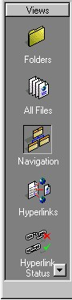
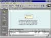
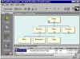
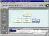

|
| ||
|
| ||
The new Navigation View in FrontPage 98 lets you create and manage the navigational structure of your Web site within seconds. Now it's easy to connect new pages and move pages around. You can even print a map of your entire site.
Start by opening a FrontPage Web in the FrontPage Explorer and select Navigation from the Views Bar.

Though it depends on the structure of you current Web, you will likely see your Home Page in this view to begin with. To add to your Web's navigation structure, you may drag existing Web pages from the "Contents" portion of the screen and attach them directly underneath the home page. You may also select any existing page in the Navigation View and click on the New Page button in order to create a new page that will attach under the page you have selected.
After you add pages to the Navigation View, you may drag pages around in order to re-connect them to different pages. From this view, you may also rename and/or delete existing pages.
FrontPage 98 also makes it easy to add Navigation Bars across the pages of your site based on the structure of your Web in the Navigation View. To do this, Shared Borders must be activated across your site on any page where you would like FrontPage to automatically add a navigation bar. From the FrontPage Explorer, go to Tools: Shared Borders. Shared Borders may be activated for any age at the top of the page (a header), at the bottom of the page (a footer), along the left side, or along the right side. Select the portions of the page where you would like to include a Shared Border and click OK.

Click image to enlargeContinue to add pages to your navigation structure by dragging them from the lower window pane of the Navigation View (which shows the Folders View) and dropping them into the upper pane of the Navigation View. Once you have added all necessary navigational pages to the main Navigation View window, rely on FrontPage to fit all of the pages into your window. To do this, click on the Size To Fit button. You may also rotate your Navigation View chart by clicking the Rotate button on your toolbar.

Click image to enlargeTo help you keep track of your pages, you may collapse and expand your chart by clicking on the plus and minus at the bottom, center of each page's icon.

Click image to enlarge
Once you've arranged your Web's pages, you may make a hard copy of your page
organizational chart by selecting Print Navigation View from the File menu. By collapsing
certain trees in the Navigation View and expanding others, you can print maps for each
area of your Web.
Now double-click on one of the page icons in Navigation View. This will open the page in
FrontPage Editor. If you have selected Shared Borders for the top and left side for pages
in your site, you'll see that the top and left borders of your page now include Navigation
Bars in them that match your site's selected Theme.
 Click image to enlarge
Click image to enlarge
If you want to change your Shared Border
settings for your entire site, choose Shared Borders from the Tools menu in the FrontPage
Explorer. If you decide to change the Shared Border settings only for any individual page
on which you are currently working, select the same item on the Tools menu in the
FrontPage Editor. Whenever you add new pages or reorganize the structure of the Navigation
View, FrontPage automatically updates your Navigation Bars for you.
Did you find this material useful? Gripes? Compliments? Suggestions for other articles? Write us!
© 1999 Microsoft Corporation. All rights reserved. Terms of use.